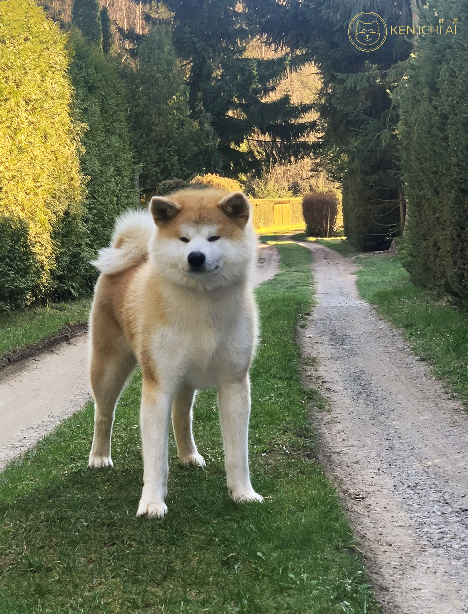

ras

de akita inu is een japanse hond
De Akita is zeker geen hond voor beginners omdat ze bekendstaan voor hun kopigheid en sensetief karakter
de huisvesting
het is belangrijk voor de akita inu om voldoende ruimte te hebben
de tuin moet groot genoeg zijn en er zou best ook een schutting zijn in de tuin
klik hier